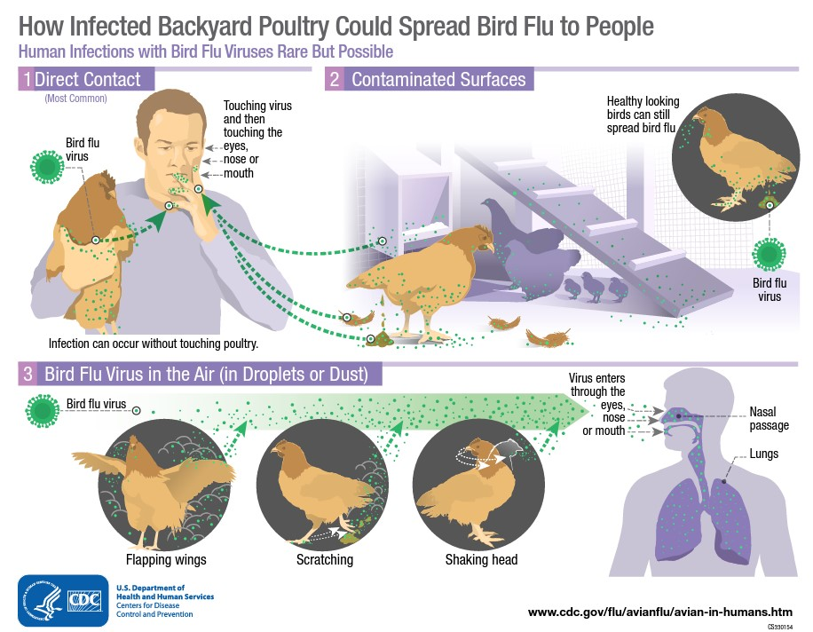
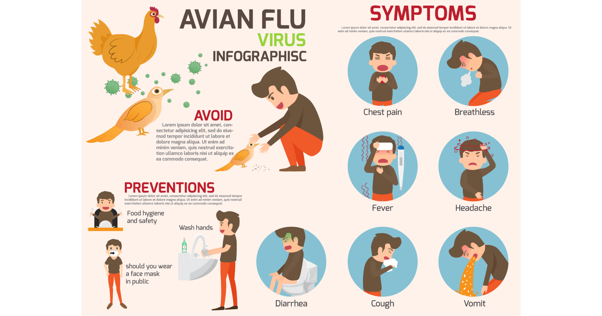
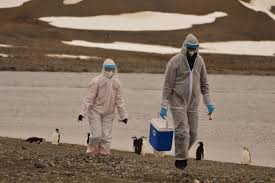

Year Originated
1996
Location of Origin
Guangdong, China
Spread of Virus/Disease
Global pandemic
Precautions required
Wear masks, apply Vaccine as soon as possible, stay contact with doctor, avoid chickens and birds

1996
Guangdong, China
Global pandemic
Wear masks, apply Vaccine as soon as possible, stay contact with doctor, avoid chickens and birds

According to the World Health Organization (WHO) and the United Nations Food and Agriculture Organization, H5N1 pathogenicity is gradually continuing to rise in endemic areas, but the avian influenza disease situation in farmed birds is being held in check by vaccination, and there is "no evidence of sustained human-to-human transmission" of the virus. Eleven outbreaks of H5N1 were reported worldwide in June 2008, in five countries (China, Egypt, Indonesia, Pakistan and Vietnam) compared to 65 outbreaks in June 2006, and 55 in June 2007. The global HPAI situation significantly improved in the first half of 2008, but the FAO reports that imperfect disease surveillance systems mean that occurrence of the virus remains underestimated and underreported. As of May 2020, the WHO reported a total of 861 confirmed human cases which resulted in the deaths of 455 people since 2003.
HPAI A(H5N1) is considered an avian disease, although there is some evidence of limited human-to-human transmission of the virus. A risk factor for contracting the virus is handling of infected poultry, but transmission of the virus from infected birds to humans has been characterized as inefficient. Still, around 60% of humans known to have been infected with the Asian strain of HPAI A(H5N1) have died from it, and H5N1 may mutate or reassort into a strain capable of efficient human-to-human transmission. In 2003, virologist Robert G. Webster published an article titled "The world is teetering on the edge of a pandemic that could kill a large fraction of the human population" in American Scientist. He called for adequate resources to fight what he sees as a major world threat to possibly billions of lives. On September 29, 2005, David Nabarro, the newly appointed Senior United Nations System Coordinator for Avian and Human Influenza, warned the world that an outbreak of avian influenza could kill anywhere between 5 million and 150 million people.
People with H5N1 have reported a wide range of symptoms ranging from mild to severe. Symptoms may appear approximately 10 days after exposure to the virus. Anyone can have mild to severe symptoms. Possible symptoms include:
This list does not include all possible symptoms. Symptoms may change with new Influenza variants and can vary by person. The CDC will continue to update this list as we learn more about Influenza.

The stats below show the danger and consequences of H5N1
 1261
Active Cases
1261
Active Cases
 455
Deaths
455
Deaths
 649
Recovered Cases
649
Recovered Cases

The social impact of H5N1 is the effect or influence of H5N1 in human society, especially the financial, political, social, and personal responses to both actual and predicted deaths in birds, humans, and other animals. Billions of dollars are raised and spent to research H5N1 and prepare for a potential avian influenza pandemic. Over ten billion dollars were lost, and over two hundred million birds were killed to contain H5N1. People reacted by buying less chicken causing poultry sales and prices to fall. Many individuals stockpiled supplies for a possible flu pandemic.
Poultry farming practices have changed due to H5N1: killing millions of poultry, vaccinating poultry against bird flu, vaccinating poultry workers against human flu, limiting travel in areas where H5N1 is found, increasing farm hygiene, reducing contact between livestock and wild birds, reducing open-air wet markets, limiting workers contact with cock fighting, reducing purchases of live fowl, improving veterinary vaccine availability and cost. For example, after nearly two years of using mainly culling to control the virus, the Vietnam government in 2005 adopted a combination of mass poultry vaccination, disinfecting, culling, information campaigns and bans on live poultry in cities.
The cost of poultry farming has increased, while the cost to consumers has gone down due to fears from H5N1 driving demand below supply, resulting in devastating losses for many poultry farmers. Poor poultry farmers can't afford mandated measures keeping their bird livestock from contact with wild birds (and other measures) thus risking losing their livelihood altogether. Multinational poultry farming is increasingly becoming a profit loser as H5N1 achieves status as endemic in wild birds worldwide.

There is no highly effective treatment for H5N1 flu, but oseltamivir (commercially marketed by Roche as Tamiflu) can sometimes inhibit the influenza virus from spreading inside the user's body. This drug has become a focus for some governments and organizations trying to prepare for a possible H5N1 pandemic. On April 20, 2006, Roche AG announced that a stockpile of three million treatment courses of Tamiflu are waiting at the disposal of the World Health Organization to be used in case of a flu pandemic; separately Roche donated two million courses to the WHO for use in developing nations that may be affected by such a pandemic but lack the ability to purchase large quantities of the drug. However, WHO expert Hassan al-Bushra has said: "Even now, we remain unsure about Tamiflu's real effectiveness. As for a vaccine, work cannot start on it until the emergence of a new virus, and we predict it would take six to nine months to develop it. For the moment, we cannot by any means count on a potential vaccine to prevent the spread of a contagious influenza virus, whose various precedents in the past 90 years have been highly pathogenic". Animal and lab studies suggest that Relenza (zanamivir), which is in the same class of drugs as Tamiflu, may also be effective against H5N1. In a study performed on mice in 2000, "zanamivir was shown to be efficacious in treating avian influenza viruses H9N2, H6N1, and H5N1 transmissible to mammals". In addition, mice studies suggest the combination of zanamivir, celecoxib and mesalazine looks promising producing a 50% survival rate compared to no survival in the placebo arm. While no one knows if zanamivir will be useful or not on a yet to exist pandemic strain of H5N1, it might be useful to stockpile zanamivir as well as oseltamivir in the event of an H5N1 influenza pandemic. Neither oseltamivir nor zanamivir can be manufactured in quantities that would be meaningful once efficient human transmission starts. In September, 2006, a WHO scientist announced that studies had confirmed cases of H5N1 strains resistant to Tamiflu and Amantadine. Tamiflu-resistant strains have also appeared in the EU, which remain sensitive to Relenza.
Additionally, the best way is still to prepare or having vaccine or contact your local medical centre to make full preparations. Hope our informations help you prepare and deal with H5N1 easily as this virus won't be deadly as long as you take care of you health and be careful
Discover other virus and how they devastated the society read more to explore further.
© VERTEX SYSTEM. Develop by TranVietBach. All Rights Reserved.